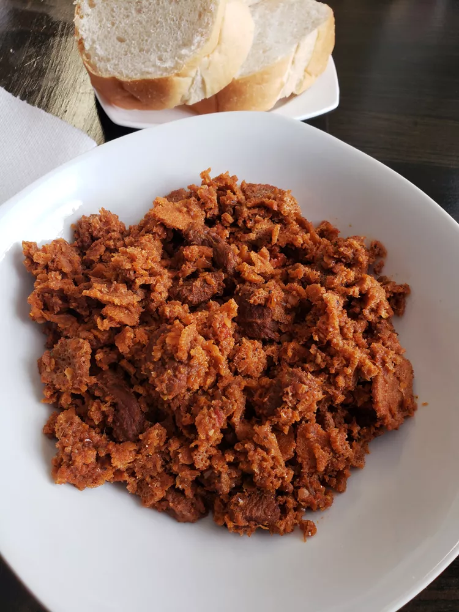

Quanta Firfr
Back to home
This is a popular traditional Ethiopian dish. Please enjoy. This quanta firfir recipe can also be made with fresh beef or lamb!

Ingredients
- 2 red onions, chopped
- ⅓ cup vegetable oil
- 1 tablespoon garlic paste
- 4 ripe tomatoes, chopped
- 3 cups water, divided
- 14 ounces dried beef
- 2 tablespoons Ethiopian berbere seasoning
- ½ cup Ethiopian kibbeh (spiced clarified butter)
- 2 teaspoons salt
- 2 pieces injera (Ethiopian bread)
Directions
-
Place onions in a large saucepan over medium-high heat. Cook, covered, until starting to brown, about 5 minutes. Add vegetable oil and garlic paste; cook until fragrant, about 5 minutes. Stir in tomatoes; cook until softened, 5 to 7 minutes.
-
Pour 2 1/2 cups water into the saucepan. Bring to a boil. Reduce heat to low and simmer, covered, until flavors combine, about 10 minutes.
-
Tear 1 injera into palm-sized pieces; fold gently into the sauce. Serve beef and sauce over whole injera.